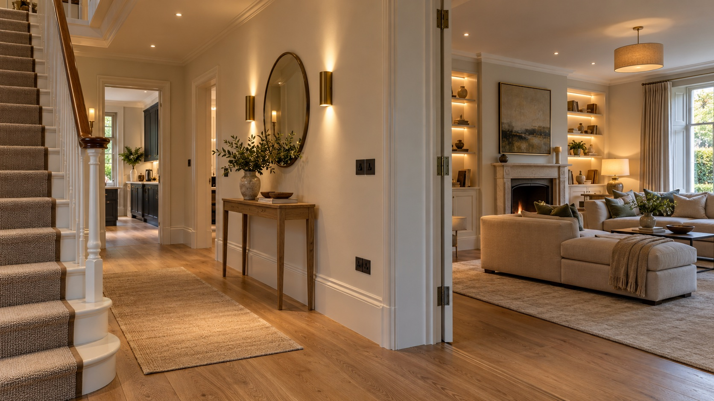
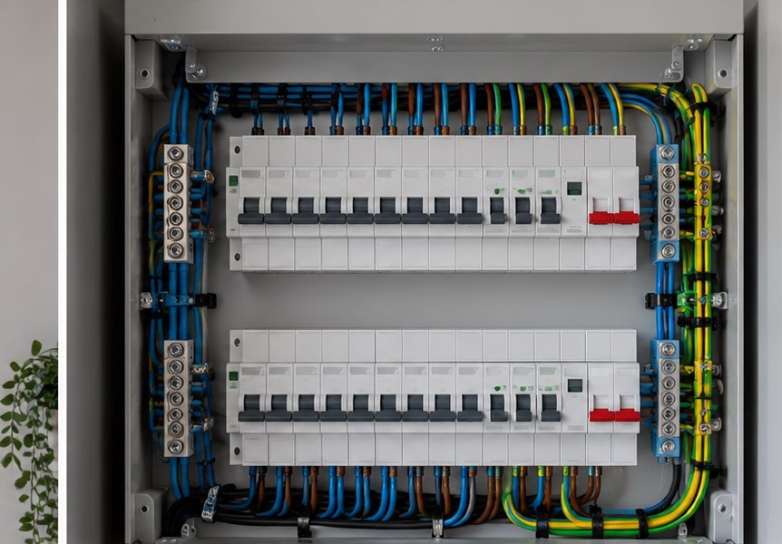

Domestic installations
Electrical installations for new spaces and renovations, planned around the layout, use and finish of your home.
ELECTRICAL
From a new circuit to lighting throughout a renovation, the electrical work should suit the home you live in and the systems you plan to add.
Get in touch
THE WORK BEHIND THE FINISH
Good electrical work begins with understanding the property and the plans for it. We think through the practical details early, so lighting, power and future controls have a clear place.

A CLEAR PLAN FOR EVERY ROOM
Before work begins, we can talk through where sockets, switches, lighting and equipment need to sit. That helps the finished rooms feel more considered and gives connected systems a practical foundation.
Room layouts and routines guide the position of practical power and controls.
Lighting, switching and planned technology can be considered alongside renovation or building work.
We plan visible fittings and hidden connections together, with the overall room in mind.
HOW WE CAN HELP
Practical improvements and new installations, planned with care from first fix to finishing detail.
Electrical installations for new spaces and renovations, planned around the layout, use and finish of your home.
Layered interior and exterior lighting, considered for practical tasks, relaxed evenings and the character of each space.
Socket and switch positions considered alongside furniture, appliances and the way you move through each room.
New circuits and supplies for additional rooms, equipment and outdoor areas, coordinated with the wider installation.
Careful fault finding to understand an electrical issue, explain the findings and agree the next step.
Consumer unit and distribution work considered as part of the property’s wider electrical plan.
Plan wiring and switching with possible future dimming, lighting scenes or smart controls in mind.
START WITH A CONVERSATION